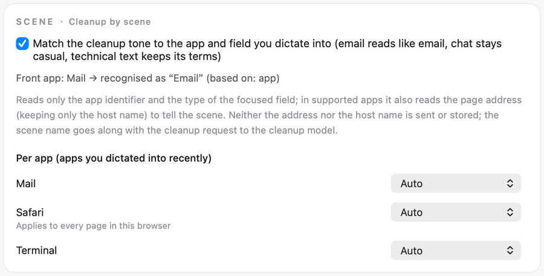
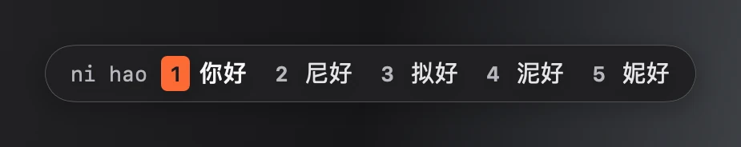
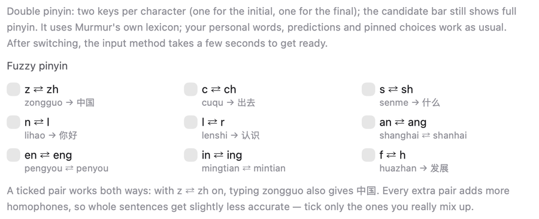
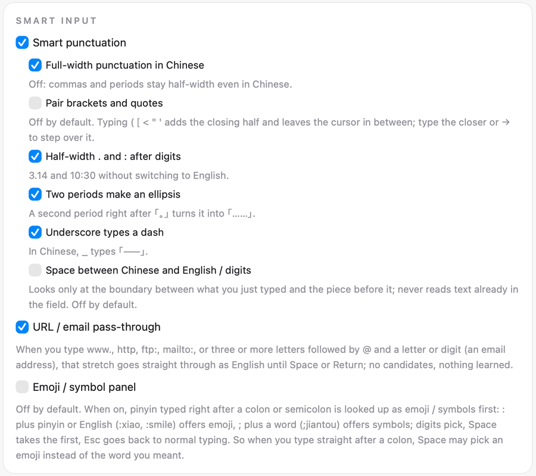

Your first sentence
Prompt skills
The plain cleanup always lands. Up to three steps are added after a blank line only when all of these hold:
- The sentence is at least 40 characters long.
- It reads as one single kind of request (nothing is added when it reads as two or more, or as none).
- You have not already said how to approach it, for example “don’t change anything yet”, “just explain” or “fix it while you’re there”.
Otherwise only the cleanup lands. Sentences under 15 characters or words skip the skill. Nothing is added when cleanup fails or when translating.
Seven coding skills: Fix a bug, Build a feature, Change or refactor code, Explain code, Review code, Plan the work, Write tests.
Five chat skills: Research, Write, Decide, Summarize, Reply.
AI coding tools get the seven coding skills. AI chat tools can use all twelve. Other apps recognised as an AI assistant get the five chat skills. Prompt skills do not run in terminals.
The skills page shows what the skills do and lists all twelve by name. You can also paste a sentence there to try it.
Once it is on, the transcript of a long enough sentence is sent one more time to the same model vendor that cleanup uses. No new recipient is added, no audio is sent, and the window you are in is not sent. When cleanup is set to leave text alone, the skill sends nothing either.
Settings → Cleanup → Prompt skills
Cleanup by scene
Dictate as usual, with no extra key. The card shows which scene the front app is recognised as, and you can set a scene for one app.
When cleanup is set to leave text alone, this does nothing.
It reads the app identifier and the field type, plus the page host name in supported browsers. The host name is not sent. The scene name goes with the cleanup request to the cleanup model.

Install the input method

Typing Pinyin
Double and fuzzy pinyin
Pick a double pinyin layout and type as usual. The candidate bar still shows full pinyin. After switching, the input method takes a few seconds to get ready.
With z ⇄ zh on, typing zongguo also gives 中国. Every extra pair makes whole sentences slightly less accurate, so tick only the ones you really mix up.

Smart punctuation and URLs

Candidate window
Three sizes: Small, Standard, Large. Five accent colours: Coral, Blue, Green, Purple, Graphite.
Horizontal or vertical. In the vertical layout each candidate gets its own line, and long ones wrap instead of being cut off. Light and dark follow the system appearance.

Cloud candidates
There is a fixed cloud slot at the end of the candidate bar. A request is sent only when you click it or press ⌥↩.
The result fills the same slot. Click it or press ⌥↩ again to commit. It takes no number key and never commits by itself. It does not work in password fields or in apps on the deny list.
Once this is on, the pinyin you have not committed yet is sent to the Murmur server and passed on to a third-party model service to guess the whole sentence; what you are typing can be inferred from it. Text you have already committed, your personal lexicon and which app you are in are not sent. After you turn it off, no new requests are sent; what has already been sent cannot be taken back.
Shortcut phrases
When typing. Write your own “code → phrase”, e.g. dz → your address. Type the code in Murmur Pinyin and the phrase is the first candidate.
When speaking. In dictation, say the trigger phrase on its own and the whole template goes in. If you say even one extra word, it does not count as a match.
Input method: Settings → Input Method → Dictionary · Words I've typed (learned by the input method) → Manage shortcut phrases.
Dictation: the Dictionary page in the main window sidebar, Snippets card.
dz → your address
Words you type
When you dictate, these words go with the recognition request as hints, same as the dictionary. If you choose offline recognition, they stay on your Mac.
When you press ⌥⇧Space for the AI cleanup card, the words the sentence touches go with that request, at most 500. This happens with offline recognition too.
Words do not sync between devices in this version.
Settings → Input Method → Dictionary · Words I've typed (learned by the input method). Switch off "Learn the words I type" to stop learning. Switch off "Let AI use my own words" and the AI cleanup card sends none.
To clear them: Settings → System → Clear data.
~/Library/Application Support/Murmur/lexicon.sqlite
Changelog
0.53 · New
- The Murmur Pinyin input method ships with the app. Install, update and uninstall it in Settings → Input Method.
- Press Delete within 1.5 seconds of a commit and the whole word turns back into Pinyin.
- Double pinyin: Flypy and Ziranma. Nine fuzzy pinyin pairs, all off by default.
- Smart input: punctuation rules, URL and email pass-through, an emoji panel. The emoji panel is off by default.
- Candidate window: three sizes, five accent colours, horizontal or vertical. Light and dark follow the system.
- Cloud candidates (preview): press ⌥↩ and the cloud suggests a whole sentence. Off by default, sign-in required.
- In the input method, ⌥⇧Space opens the AI cleanup card for the current sentence.
- Prompt skills: in AI coding tools, AI chat tools and some AI desktop apps, press the dictation key and say the request. What lands is your own words, cleaned up; when it can tell what you want done, up to three steps are added at the end. Off by default.
- Cleanup by scene: the cleanup tone follows the app you dictate into. On by default.
- Settings has a new Input Method tab with all the input method settings.
- Every history entry has a Fix button. Fix it and press ⌘↩ to save.
- Just sign in with your email on the sign-in page. No separate request needed.
- About in the menu bar shows the version. Murmur checks the website once a day and shows a note in the menu bar when there is a new version. It does not download by itself.
- After a force quit or crash, the unfinished sentence is kept in history.
0.53 · Fixed
- Text fields where the selection cannot be read now get the text directly, with no manual ⌘V.
- Switch to another window and back to the original field, and the text goes in within 60 seconds.
- "Inserted" shows only after it is checked. Otherwise it says "Inserted (not checked)".
- If the microphone picks up no sound while recording, the capsule says so.
- While processing, the capsule shows either “Recognising” or “Cleaning up”. Cleanup waits at most 45 seconds.
- The English interface no longer shows Chinese error messages.
- Four clear buttons are now one: Settings → System → Clear data.